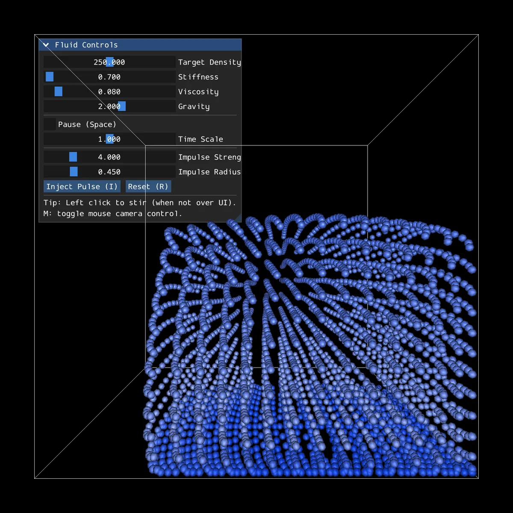
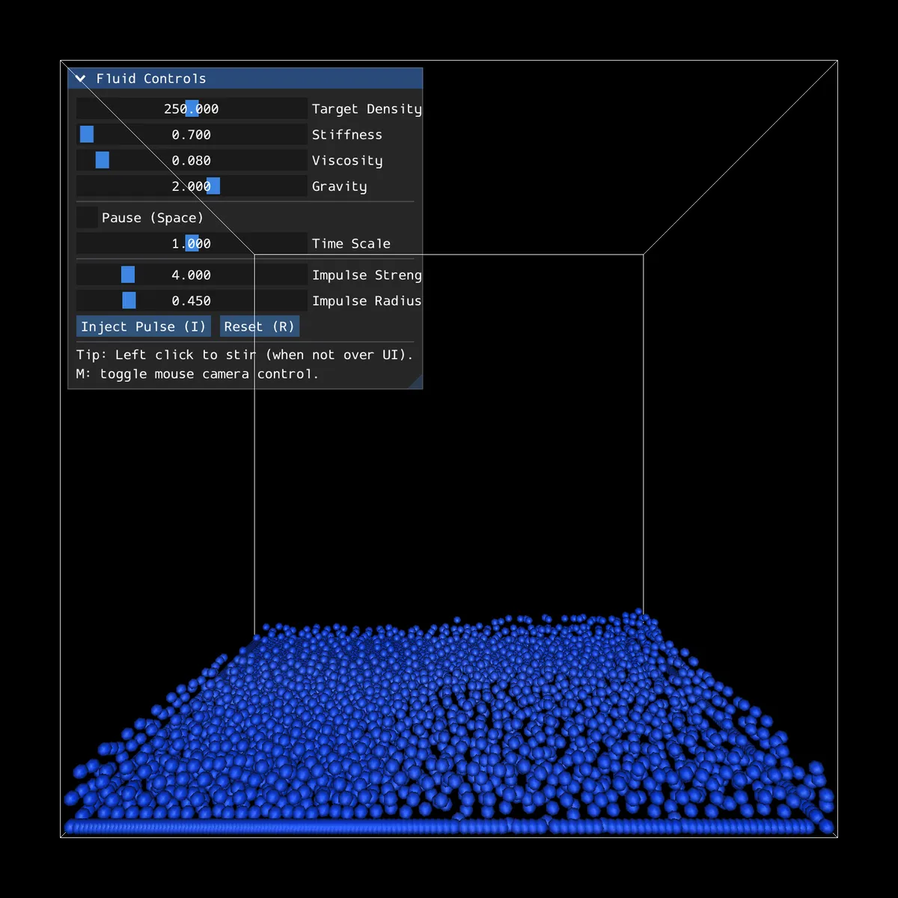
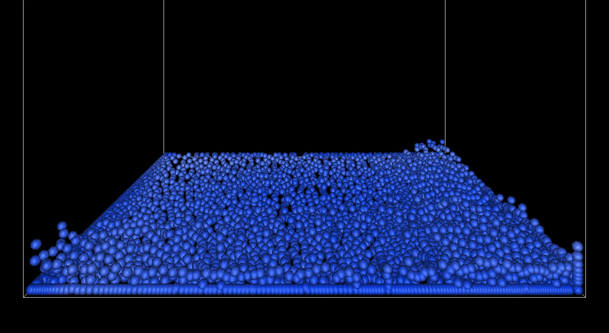

Case study 03 · Simulation · C++
Fluid simulation
How can a few thousand particles act like a fluid?
- Status
- Working prototype
- Stack
- C++17, OpenGL, GLFW, Dear ImGui, OpenMP
- Particles
- 3,375 (a 15 × 15 × 15 block)
- Last updated


What it is
Water is continuous, but a computer can only track a finite number of things. Smoothed particle hydrodynamics (SPH) treats a fluid as a crowd of particles and asks each one: how crowded is it around me, and which way should that push me?
This simulation drops a block of particles into a box and lets SPH, gravity and the walls take over. Sliders change density, stiffness, viscosity and gravity while it runs, and clicking stirs the fluid.
I built it after watching Sebastian Lague's video on fluid simulation. The code here is my own C++ version, in 3D.
The maths
Every particle's influence is spread over a small radius h by a smoothing kernel W. Each step does three things, each with its own kernel:
- Density from the Poly6 kernel, a smooth hill: ρᵢ = Σⱼ mⱼ W(rᵢⱼ, h).
- Pressure from how far density is above a target: pᵢ = k (ρᵢ − ρ₀). The force comes from the gradient of the Spiky kernel, which stays steep near the centre so close particles push apart hard.
- Viscosity from the Laplacian of a third kernel, nudging each particle's velocity toward its neighbours'.
How the code is laid out
Fluid.h: the kernels, density, pressure and force passes, parallelised with OpenMP.SpatialGrid.h: neighbour search.Physics.h: the time step, wall collisions, colouring by speed and drawing.main.cpp: window, camera, ImGui sliders, mouse stirring and impulses.
The pressure and viscosity forces on particle i, summed over its neighbours:
// pressure force - symmetric formulation
float pressure = (i1.pressure / (safeDensity_i * safeDensity_i))
+ (j1.pressure / (safeDensity_j * safeDensity_j));
pressureForce -= j1.mass * pressure * SpikyKernelGradient(r, dir);
// viscosity force
float lap = LaplacianKernel(r);
viscosityForce += viscosity * (j1.mass / safeDensity_j)
* (j1.velocity - i1.velocity) * lap;src/library/Fluid.h, computeTotalForce()
The symmetric form adds pᵢ/ρᵢ² and pⱼ/ρⱼ², so the force i feels from j is equal and opposite to the force j feels from i. Without that, momentum leaks.

A hashed grid the size of the kernel
Checking every pair of 3,375 particles is about 5.7 million distance tests per step. But the kernels are zero beyond h, so only nearby particles matter.
The grid uses cells exactly h wide. Any neighbour within h must then be in the particle's own cell or one of the 26 around it. Cells are stored in a hash map keyed by multiplying the cell coordinates by three large primes and XOR-ing them, so the grid needs no fixed size.
// Hash the 3D coords to a single int value
int hashCell(const glm::ivec3& cell) {
return (cell.x * 73856093)^(cell.y * 19349663)^(cell.z * 83492791);
}src/library/SpatialGrid.h, lines 28 to 31
What I can show it does
- Builds with CMake on macOS and runs with 3,375 particles (checked November 6, 2026). The frames on this page come from that build.
- With the defaults the block collapses, sloshes against the walls and settles into a layer, which is what a dam-break should do qualitatively.
- The cross-platform GitHub Actions build is currently failing, so there is no download yet.
What I would fix next
- Integration. The main loop updates velocity, then position, with one force evaluation per frame: semi-implicit Euler. A
VerletIntegrationfunction exists inPhysics.hbut the loop does not call it. Switching to velocity Verlet, with forces recomputed between the two half-steps, is the obvious next experiment. - Compressibility. Pressure is a linear function of density, so the fluid can compress noticeably. Stiffness and target density are tuned by eye.
- Visual, not quantitative. I have not yet measured density error or energy over time.
Next question: how far from the target density does the fluid drift, and does a stiffer equation of state or a smaller time step fix it?
Inspiration and libraries
Inspired by Sebastian Lague's fluid simulation video. Kernels follow the standard forms from Müller, Charypar and Gross (2003). Built with GLFW, GLAD, Dear ImGui and GLM.